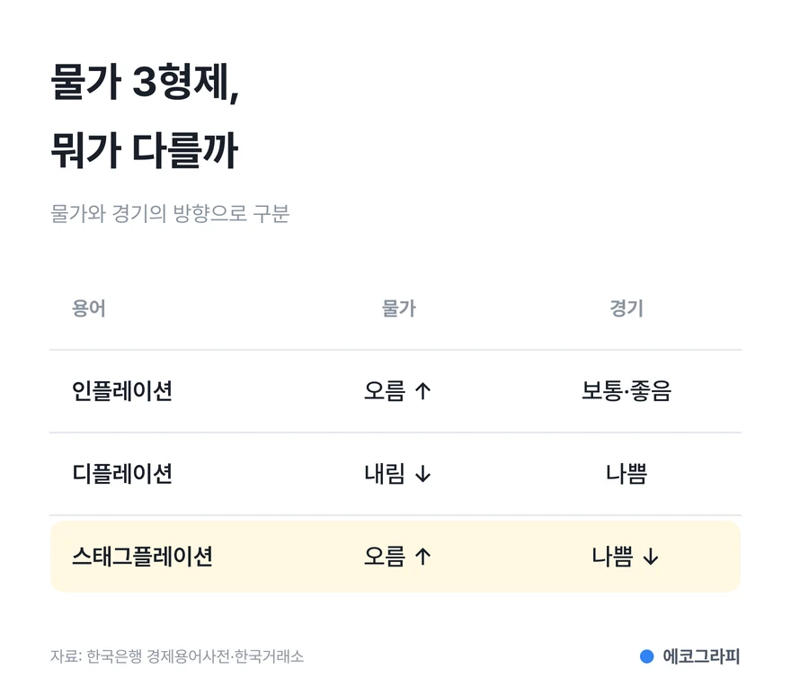
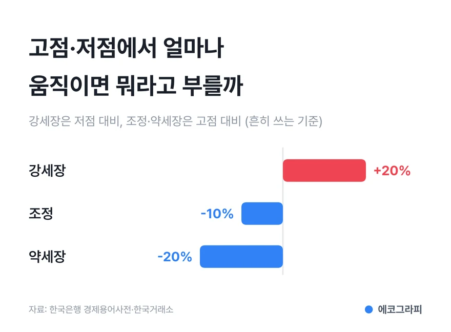
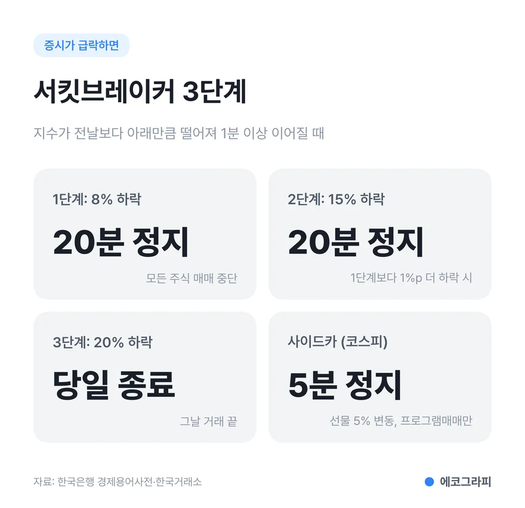
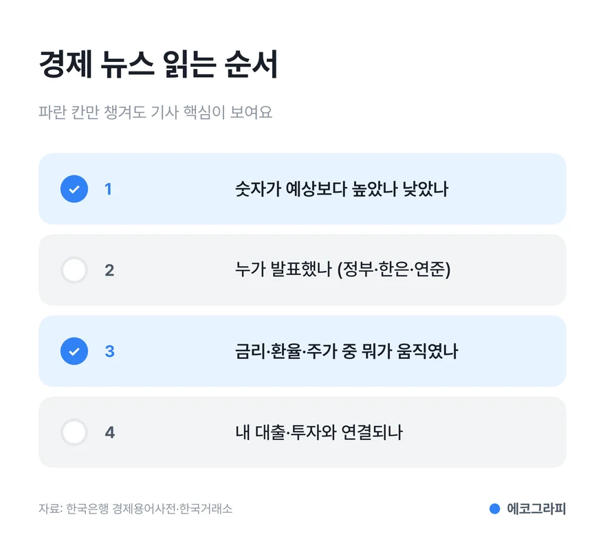

| 단어 | 한 줄 뜻 |
|---|---|
| 인플레이션 | 물가가 계속 오르는 현상. 돈의 가치가 떨어짐 |
| 디플레이션 | 물가가 계속 내리는 현상. 소비·투자가 미뤄져 경기가 식음 |
| 스태그플레이션 | 경기는 나쁜데 물가는 오르는 최악의 조합 |
| CPI (소비자물가지수) | 장바구니 물건값 변화를 숫자로 만든 대표 물가 지표 |
| 근원물가 | 값이 크게 출렁이는 식료품·에너지를 뺀 물가. 추세를 볼 때 씀 |
| 단어 | 한 줄 뜻 |
|---|---|
| GDP (국내총생산) | 한 나라 안에서 일정 기간 만든 상품·서비스의 가치 합계 |
| 역성장 | GDP가 전 분기나 전년보다 줄어든 것 |
| 경기침체 (리세션) | 경제활동이 넓게 위축된 상태. 흔히 'GDP 2분기 연속 마이너스'를 기준으로 말함 |
| 연착륙 | 물가를 잡으면서도 큰 침체 없이 경기가 부드럽게 식는 것 |
| 경착륙 | 경기가 급하게 꺾이며 실업·부도가 늘어나는 것 |
| 단어 | 한 줄 뜻 |
|---|---|
| 매파 / 비둘기파 | 금리 인상에 적극적인 쪽 / 인하에 우호적인 쪽 |
| 양적완화 (QE) | 중앙은행이 채권을 사들여 시장에 돈을 푸는 것 |
| 양적긴축 (QT) | 사들였던 채권을 줄여 시장의 돈을 거둬들이는 것 |
| 유동성 | 시장에 도는 돈의 양, 또는 자산을 현금으로 바꾸기 쉬운 정도 |
| 피벗 | 금리 정책의 방향을 바꾸는 것 |
금리 용어는 기준금리 기초 글에 더 자세히 정리했어요.

| 단어 | 한 줄 뜻 |
|---|---|
| 조정 / 약세장 | 고점 대비 약 10% 하락 / 약 20% 이상 하락 |
| 서킷브레이커 | 지수가 급락하면 거래를 잠시 멈추는 장치 |
| 사이드카 | 선물이 급등락할 때 프로그램 매매만 5분 멈추는 장치 |
| 어닝 서프라이즈 / 쇼크 | 실적이 시장 예상(컨센서스)보다 훨씬 좋음 / 나쁨 |
| 공매도 | 주식을 빌려서 먼저 팔고 나중에 사서 갚는 거래. 주가 하락에 베팅 |

경제 기사에는 늘 숫자가 나와요. 그 숫자 자체보다 시장이 예상했던 숫자보다 높았는지 낮았는지가 시장을 움직입니다. 물가가 높게 나와도 예상보다 낮으면 주가가 오르기도 해요.

YoY는 작년 같은 달(분기) 대비, MoM은 지난달 대비 변화율이에요. 물가 기사엔 주로 YoY가 쓰여요.
증권사 애널리스트들의 전망치를 모은 평균이에요. 실제 발표치와 비교하는 기준이 됩니다.
아주 드물어요. 금융위기나 팬데믹처럼 시장이 극도로 흔들릴 때 발동됐어요.
한국은행 경제용어사전이 가장 정확해요. 이 블로그 '경제용어' 라벨에도 계속 정리할게요.
※ 2026년 11월 기준으로 정리한 글입니다. 세율·제도는 바뀔 수 있으니 거래 전 증권사·국세청 안내를 한 번 더 확인하세요. 특정 종목·상품의 매수·매도 권유가 아닙니다.